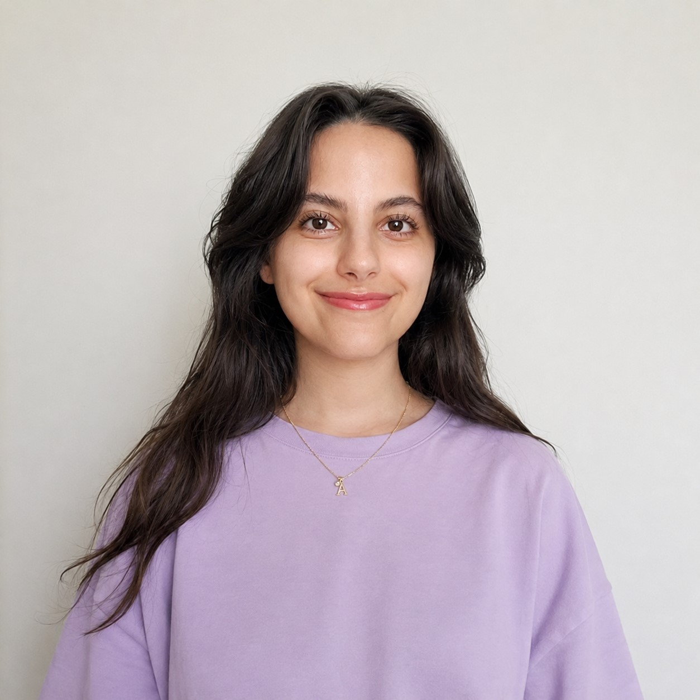

Computational Biologist | M.Sc. in Biotechnology
I am a computational biologist with a background in biotechnology, specializing in all-atom molecular dynamics simulations and structural bioinformatics. My work bridges computational modeling and biology, spanning the validation of AI-designed proteins and peptides, biomolecular structure prediction with AlphaFold, and the study of protein-protein and protein-ligand interactions.
My research interests sit at the intersection of computational structural biology and disease-relevant molecular design, with a particular focus on neurodegenerative diseases and cancer. I am working to extend my expertise toward discrete diffusion-based protein design and the functional evaluation of generated protein and peptide sequences, with a longer-term interest in machine learning-driven generative design of proteins, peptides, and biomaterials.